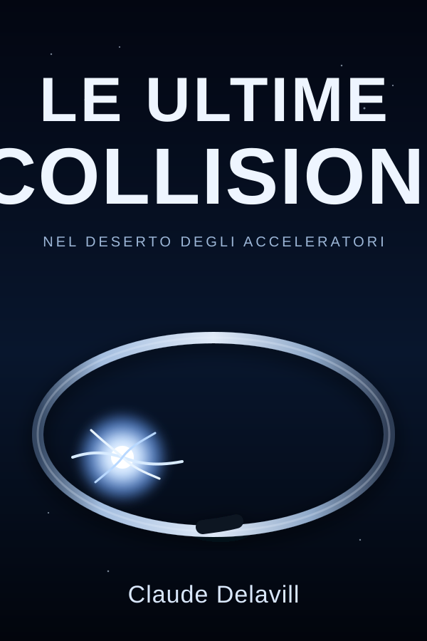
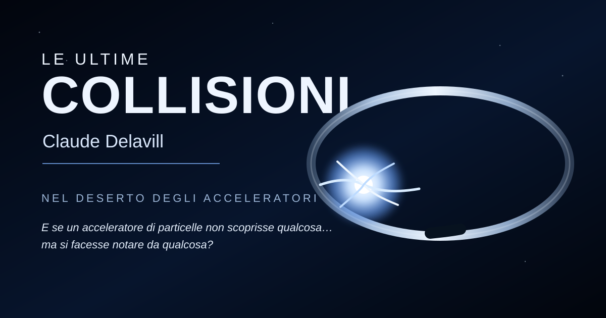

Materia e antimateria
Elettroni e positroni possono essere accelerati e fatti collidere. Nell'annichilazione, la loro energia può produrre nuove particelle.
REALEFANTASCIENZA · FIRST CONTACT · TECHNO-THRILLER
Nel deserto degli acceleratori
E se un acceleratore di particelle non scoprisse qualcosa…
ma si facesse notare da qualcosa?

IL ROMANZO
Per decenni gli acceleratori hanno cercato risposte nella materia. Poi, durante una serie di collisioni, compare un'anomalia che non dovrebbe esserci: un'eco nei sensori, una distorsione, qualcosa che sembra reagire.
Lara vuole capire i dati. Alex sa quanto poco basta perché una macchina complessa diventi pericolosa. Intorno a loro, la DAG osserva, autorizza nuovi test e sembra sapere molto più di quanto dichiari.
Quando l'esperimento smette di assomigliare a una ricerca e comincia a somigliare a una conversazione, la domanda cambia: che cosa c'è dall'altra parte?
COLLISIONE: COMPLETATA
ANOMALIA: CONFERMATA
ORIGINE: NON LOCALE
SCIENZA O FANTASCIENZA?
Elettroni e positroni possono essere accelerati e fatti collidere. Nell'annichilazione, la loro energia può produrre nuove particelle.
REALEIn un collisore non conta soltanto l'energia: conta anche quante collisioni possono avvenire. Più collisioni significano più possibilità di osservare eventi rari.
REALEUn segnale non locale che sembra reagire alla macchina? Da qui comincia la parte che appartiene a Le Ultime Collisioni.
ROMANZOIMMAGINI UFFICIALI
Materiali ufficiali del progetto da utilizzare su web, social e schede stampa.

PRESS KIT
Un pacchetto leggero e pronto all'uso con cover, visual orizzontale e scheda sintetica del libro.
IL CONCEPT
Più collisioni. Più domande.
E quando insisti su qualcosa che può rispondere?
FAQ
Fantascienza con elementi di first contact e techno-thriller, costruita intorno al mondo degli acceleratori di particelle.
No. I concetti scientifici sono introdotti in modo narrativo e accessibile; la storia può essere seguita senza una formazione tecnica.
Il romanzo parte da concetti reali — fasci, magneti, cavità acceleranti, collisioni, antimateria, luminosità — e li usa come base per una premessa fantascientifica.
È disponibile su Amazon Italia. Usa il pulsante qui sotto per aprire direttamente la pagina del libro.
{kind=link}